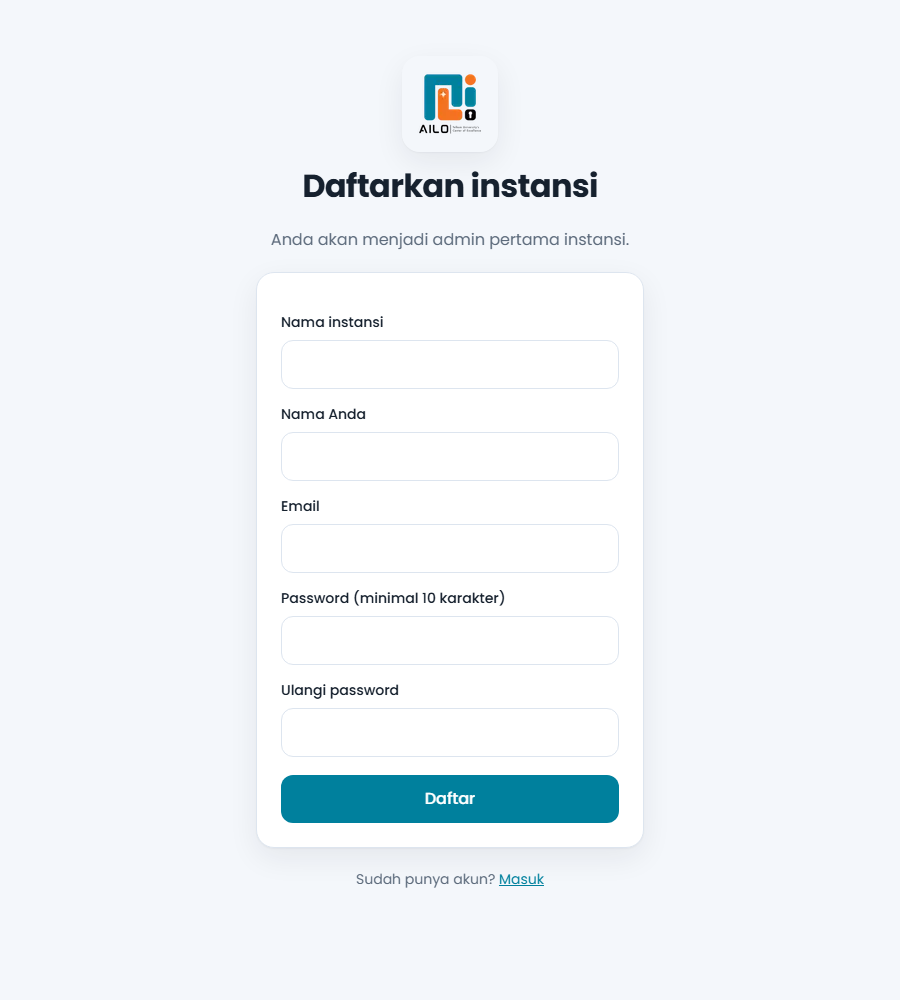

Edisi 1 · Panduan Pengguna
NUMORA
Numbering, Simplified. Panduan lengkap penomoran surat resmi untuk instansi Anda.
- Daftar & masuk
- Alur persetujuan
- Format nomor
- Peran & hak akses
- Referensi fungsi
numora.ailabs.or.idAILO | Telkom University's Center of ExcellenceOktober 2026
Selamat datang
Satu pintu untuk setiap nomor surat
NUMORA menerbitkan nomor surat yang unik, berurutan, dan bisa diaudit untuk seluruh unit di instansi Anda.
Bayangkan dua orang meminta nomor surat pada detik yang sama, lalu keduanya menerima nomor yang sama. NUMORA dibuat supaya hal itu tidak terjadi. Nomor tidak diberikan saat surat diajukan, melainkan saat approver menyetujuinya, dan penerbitannya terjadi dalam satu transaksi database yang tidak bisa terpecah.
Hasilnya, penolakan tidak meninggalkan celah urutan, dua approver tidak bisa menyetujui surat yang sama dua kali, dan nomor yang dibatalkan tidak pernah dipakai ulang. Setiap langkah tercatat di jejak audit.
Panduan ini memandu Anda dari mendaftarkan instansi sampai membaca format nomor. Setiap fungsi diberi kode F01 sampai F17 agar mudah dirujuk.
"Nomor terbit saat disetujui, bukan saat diajukan."
0nomor bolong akibat penolakan
5peran pengguna terpisah
6token format nomor
17fungsi terdokumentasi
Di dalam edisi ini
- 01Landing page dan navigasi3
- 02Mendaftarkan instansi (F01)5
- 03Masuk dan lupa password (F02, F03)6
- 04Atur ulang password dan aktivasi undangan (F04, F05)7
- 05Dashboard dan keluar (F06)8
- 06Alur surat dari pengajuan sampai nomor (F07 sampai F12)9
- 07Peran dan hak akses10
- 08Format nomor dan jenis surat (F13, F14)11
- 09Pengguna, audit, dan kelola instansi (F15 sampai F17)12
- 10Keamanan, tanya jawab, dan pemecahan masalah13
NUMORA Panduan Pengguna2
Bagian 01
Landing page: pintu masuk NUMORA
Buka numora.ailabs.or.id dan Anda tiba di halaman ini. Dari sini Anda bisa masuk, mendaftar, atau mengenal fitur lebih dulu.
Gambar 1. Bagian atas landing page. Nomor pada kartu diketik otomatis bergantian.
- 1Logo dan nama. Klik kapan saja untuk kembali ke halaman utama.
- 2Menu Fitur. Menggulir ke daftar keunggulan.
- 3Menu Cara kerja. Menggulir ke tiga langkah alur surat.
- 4Tombol Daftar. Membuka formulir pendaftaran instansi (F01).
- 5Tombol Masuk. Membuka halaman login (F02).
- 6Mulai gunakan. Pintasan ke halaman login.
- 7Lihat fitur. Menggulir ke bagian fitur.
- 8Kartu contoh nomor. Memperlihatkan bentuk nomor yang akan Anda terima.
Tahukah AndaLanding page menghormati pengaturan "kurangi gerakan" di perangkat Anda. Bila diaktifkan, semua animasi dimatikan dan konten langsung tampil.
NUMORA Panduan Pengguna3
Bagian 01 · lanjutan
Fitur, cara kerja, dan ajakan bergabung
Gambar 2. Enam keunggulan NUMORA.
Gambar 3. Tiga langkah: Ajukan, Setujui, Lacak.
Gambar 4. Ajakan masuk atau mendaftarkan instansi.
Bagian penutupDi akhir halaman ada dua tombol: Masuk ke NUMORA dan Daftarkan instansi. Pengguna yang sudah memiliki akun cukup memilih yang pertama.
NUMORA Panduan Pengguna4
F01
Mendaftarkan instansi baru
Pendaftar otomatis menjadi admin instansi yang pertama. Dari akun itu Anda mengundang rekan kerja.

1
2
3
4
5
6
7
8
Gambar 5. Halaman /register
- 1Logo AILO. Klik untuk kembali ke landing page.
- 2Nama instansi. Nama resmi, 2 sampai 120 karakter. Sistem membuat alamat singkat (slug) dari nama ini.
- 3Nama Anda. Tampil di dashboard dan jejak audit.
- 4Email. Dipakai untuk masuk. Satu email hanya untuk satu instansi.
- 5Password. Minimal 10 karakter.
- 6Ulangi password. Harus sama persis dengan kolom 5.
- 7Tombol Daftar. Membuat instansi dan akun admin, lalu langsung masuk ke dashboard.
- 8Tautan Masuk. Untuk yang sudah punya akun.
Langkah singkat
- Buka
/register dari tombol Daftar di landing page.
- Isi kelima kolom, lalu tekan Daftar.
- Anda langsung masuk ke dashboard sebagai admin instansi.
Bila gagal"Email ini sudah terdaftar" berarti email dipakai di instansi lain. "Pendaftaran mandiri sedang ditutup" berarti administrator server menonaktifkan pendaftaran terbuka; minta undangan dari admin instansi Anda.
NUMORA Panduan Pengguna5
F02F03
Masuk dan lupa password
Dua halaman yang paling sering Anda buka. Keduanya sederhana, tetapi dijaga ketat.
Gambar 7. /forgot-password (F03)
- 1Email akun Anda.
- 2Password.
- 3Lupa password? Menuju F03.
- 4Masuk. Bila benar, Anda tiba di dashboard.
- 5Daftar instansi. Menuju F01.
- 6Email akun. Tulis email yang Anda pakai untuk masuk.
- 7Kirim tautan. Tautan atur ulang dikirim ke email, berlaku 1 jam.
- 8Kembali ke halaman masuk.
Penguncian akunLima kali salah password, akun dikunci 15 menit. Menunggu atau mengatur ulang password akan membukanya.
PrivasiHalaman lupa password selalu menjawab sama, baik email terdaftar atau tidak, agar orang lain tidak bisa menebak siapa saja penggunanya. Satu permintaan per menit per akun.
NUMORA Panduan Pengguna6
F04F05
Atur ulang password dan aktivasi undangan
Kedua halaman dibuka dari tautan di email, jadi tidak ada menu untuk menuju ke sana secara langsung.
Gambar 8. /reset-password?token=... (F04)
Gambar 9. /accept-invite?token=... (F05)
F04 Atur ulang password
- 1Password baru, minimal 10 karakter.
- 2Ulangi password yang sama.
- 3Simpan password. Password diganti, kunci akun dibuka, dan semua tautan reset lain milik Anda dimatikan.
F05 Aktivasi undangan
- 4Password baru untuk akun Anda.
- 5Ulangi password.
- 6Aktifkan akun. Akun dibuat sesuai peran yang ditetapkan pengundang, lalu Anda langsung masuk.
Masa berlakuTautan atur ulang berlaku 1 jam. Tautan undangan berlaku 72 jam. Keduanya hanya bisa dipakai satu kali.
Tautan kedaluwarsa?Untuk atur ulang password, minta tautan baru di halaman lupa password. Untuk undangan, minta admin instansi mengirim ulang undangan.
NUMORA Panduan Pengguna7
F06
Dashboard dan keluar
Setelah masuk, Anda tiba di /dashboard. Halaman ini membuktikan sesi dan peran Anda bekerja.
NUMORA
Nama Anda · tenant_admin Keluar
Dashboard
Antarmuka belum dibuat. Semua fungsi sudah tersedia lewat API.
ABCGambar 10. Ilustrasi susunan dashboard saat ini (digambar ulang, bukan tangkapan layar akun nyata).
- ALogo NUMORA. Kembali ke landing page.
- BNama dan peran. Menunjukkan siapa yang sedang masuk dan peran Anda.
- CKeluar. Mengakhiri sesi dan langsung membawa Anda ke landing page.
Status antarmukaSaat ini layar yang sudah jadi adalah landing page, daftar, masuk, lupa dan atur ulang password, aktivasi undangan, serta dashboard sederhana. Pengajuan, persetujuan, dan pengelolaan (F07 sampai F17) sudah berfungsi penuh di sisi server lewat API dan akan mendapat layar sendiri pada rilis berikutnya.
Keluar dengan amanSetelah menekan Keluar, cookie sesi dihapus. Bila Anda memakai komputer bersama, pastikan landing page tampil sebelum meninggalkan perangkat.
NUMORA Panduan Pengguna8
F07 sampai F12
Dari pengajuan sampai nomor terbit
Inti NUMORA: empat tahap, satu aturan emas. Nomor hanya lahir saat persetujuan.
1AjukanStaf mengisi perihal, tujuan, tanggal.
pending
Belum ada nomor
2SetujuiApprover menyetujui, nomor terbit atomik.
approved
3TolakApprover menolak dengan alasan.
rejected
Urutan tidak terpakai
4BatalkanAdmin membatalkan nomor terbit.
cancelled
Nomor tidak dipakai ulang
Fungsi pada alur surat
| Kode | Fungsi | Siapa | Syarat |
|---|
| F07 | Ajukan nomor. Isi jenis surat, unit, perihal (maks 300), tujuan (maks 300), tanggal surat. | Admin instansi, admin unit, staf | Jenis surat aktif. Staf dan admin unit hanya untuk unitnya. |
| F08 | Setujui dan terbitkan nomor. | Approver jenis surat, admin instansi | Status masih pending. |
| F09 | Tolak pengajuan. Wajib alasan 3 sampai 500 karakter. | Approver, admin instansi | Status masih pending. |
| F10 | Ajukan pembatalan nomor terbit, dengan alasan. | Pemohon, admin unit terkait, admin instansi | Status approved, belum pernah diajukan. |
| F11 | Batalkan nomor. Nomor tetap tercatat. | Admin instansi, admin unit terkait | Status approved. |
| F12 | Daftar dan cari surat. Filter status, jenis surat, kata kunci; 20 per halaman (maks 100). | Semua peran instansi | Cakupan sesuai peran. |
Dua approver bersamaanBila dua approver menekan Setujui di detik yang sama, hanya yang pertama berhasil. Yang kedua menerima "Surat ini sudah diproses" dan tidak ada nomor yang terbuang.
Email otomatisApprover dan admin instansi diberi tahu saat ada pengajuan baru. Pemohon diberi tahu saat disetujui (beserta nomor) atau ditolak (beserta alasan).
NUMORA Panduan Pengguna9
Bagian 07
Siapa boleh melakukan apa
Hak akses dibaca ulang dari database pada setiap permintaan, jadi perubahan peran atau penonaktifan akun berlaku seketika.
| Fungsi | Admin instansi | Admin unit | Staf | Auditor | Super admin |
|---|
| Ajukan nomor (F07) | ya | ya, unitnya | ya, unitnya | tidak | tidak |
| Setujui dan tolak (F08, F09) | ya, semua jenis | bila ditunjuk | bila ditunjuk | tidak | tidak |
| Ajukan pembatalan (F10) | ya | ya, unitnya | hanya miliknya | tidak | tidak |
| Batalkan nomor (F11) | ya | ya, unitnya | tidak | tidak | tidak |
| Lihat surat (F12) | semua | unit, miliknya, yang ia setujui | miliknya, yang ia setujui | semua | tidak |
| Kelola jenis surat dan unit (F13, F14) | ya | baca | baca | baca | tidak |
| Undang pengguna (F15) | ya | tidak | tidak | tidak | tidak |
| Lihat audit (F16) | ya | tidak | tidak | ya | tidak |
| Kelola instansi (F17) | tidak | tidak | tidak | tidak | ya |
Approver bukan peran.Approver adalah daftar orang yang ditunjuk pada tiap jenis surat. Seorang staf bisa menjadi approver untuk Surat Keputusan, tetapi bukan untuk MoU. Admin instansi selalu boleh menyetujui semua jenis.
Super admin dipisah.Super admin hanya mengelola instansi. Ia tidak dapat membuka isi surat milik instansi mana pun, sehingga data tiap instansi tetap rahasia.
Satu akun, satu instansiEmail bersifat unik di seluruh sistem. Bila Anda perlu bekerja di dua instansi, gunakan dua alamat email berbeda.
NUMORA Panduan Pengguna10
F13F14
Format nomor dan jenis surat
Admin instansi menyusun pola nomor sekali per jenis surat. Setelah itu NUMORA mengisinya otomatis.
Pola
{urut}/{jenis}/{unit}/{bulan_romawi}/{tahun}
Hasil
012/MOU/LEGAL/X/2026
Token yang tersedia
| Token | Arti | Contoh |
|---|
{urut} | Nomor urut, diisi nol di depan sesuai padding (1 sampai 8 digit) | 012 |
{jenis} | Kode jenis surat | MOU |
{unit} | Kode unit kerja | LEGAL |
{bulan} | Bulan dua digit | 10 |
{bulan_romawi} | Bulan angka romawi | X |
{tahun} | Tahun empat digit | 2026 |
Kapan urutan kembali ke 1?
- 1Tahunan. Wajib memuat
{tahun}.
- 2Bulanan. Wajib memuat
{tahun} dan {bulan} atau {bulan_romawi}.
- 3Tanpa reset. Urutan terus bertambah.
- 4Per unit. Urutan dipisah tiap unit; wajib memuat
{unit}.
Aturan penting
- !
{urut} harus muncul tepat satu kali.
- !Setelah ada surat, reset dan per unit terkunci.
- !Mengubah format menaikkan versi; nomor lama tidak berubah.
- !Tahun dan bulan dihitung pada zona waktu instansi (default WIB).
F13 dan F14F13 Kelola jenis surat: nama, kode, pola, padding, reset, per unit, daftar approver, aktif atau nonaktif. F14 Kelola unit kerja: nama dan kode unit (huruf besar, angka, titik, strip, maks 20).
NUMORA Panduan Pengguna11
F15F16F17
Pengguna, audit, dan referensi fungsi
F15 Undang penggunaAdmin instansi memasukkan email, nama, peran, dan unit. Undangan dikirim lewat email, berlaku 72 jam. Admin unit wajib memiliki unit.
F16 Jejak auditDaftar semua aksi: pengajuan, persetujuan, penolakan, pembatalan, undangan, reset password. Hanya admin instansi dan auditor.
F17 Kelola instansiSuper admin membuat instansi dan mengundang admin pertamanya, serta melihat daftar instansi.
Tabel referensi F01 sampai F17
| Kode | Fungsi | Alamat | Layar |
|---|
| F01 | Daftar instansi | /register | tersedia |
| F02 | Masuk | /login | tersedia |
| F03 | Lupa password | /forgot-password | tersedia |
| F04 | Atur ulang password | /reset-password | tersedia |
| F05 | Aktivasi undangan | /accept-invite | tersedia |
| F06 | Keluar | POST /api/auth/logout | tersedia |
| F07 | Ajukan nomor | POST /api/letters | API |
| F08 | Setujui | POST /api/letters/:id/approve | API |
| F09 | Tolak | POST /api/letters/:id/reject | API |
| F10 | Ajukan pembatalan | POST /api/letters/:id/cancel-request | API |
| F11 | Batalkan nomor | POST /api/letters/:id/cancel | API |
| F12 | Daftar dan cari surat | GET /api/letters | API |
| F13 | Kelola jenis surat | /api/letter-types | API |
| F14 | Kelola unit kerja | /api/units | API |
| F15 | Undang pengguna | POST /api/users/invite | API |
| F16 | Jejak audit | GET /api/audit | API |
| F17 | Kelola instansi | /api/admin/tenants | API |
Membaca tabeltersedia berarti sudah punya halaman yang bisa dipakai di browser. API berarti fungsi sudah berjalan di server tetapi layarnya belum dibuat.
NUMORA Panduan Pengguna12
Bagian 10
Aman, dan bila ada kendala
Cara NUMORA menjaga data Anda
- 1Sesi disimpan di cookie httpOnly selama 12 jam.
- 2Password disimpan sebagai hash bcrypt, tidak pernah dalam bentuk asli.
- 3Akun dikunci 15 menit setelah 5 kali salah password.
- 4Tautan undangan dan reset berupa token sekali pakai.
- 5Data tiap instansi dipisahkan di setiap permintaan.
- 6Koneksi memakai HTTPS dengan sertifikat Let's Encrypt.
Kebiasaan baik
- 1Pakai password panjang yang unik, minimal 10 karakter.
- 2Jangan bagikan tautan undangan atau reset.
- 3Tekan Keluar setiap selesai di komputer bersama.
- 4Tulis alasan penolakan dan pembatalan dengan jelas; alasan masuk jejak audit.
- 5Tunjuk lebih dari satu approver per jenis surat agar alur tidak terhenti.
Tanya jawab
| Masalah | Penyebab dan solusi |
|---|
| "Email atau password salah" | Periksa huruf besar dan kecil. Bila lupa, gunakan Lupa password. |
| "Akun dikunci sementara" | Terlalu banyak percobaan. Tunggu 15 menit atau atur ulang password. |
| Email atur ulang tidak datang | Periksa folder spam. Hanya satu permintaan per menit, dan hanya akun aktif yang menerima email. |
| "Tautan tidak valid atau sudah kedaluwarsa" | Tautan sudah dipakai atau lewat masa berlaku. Minta tautan baru. |
| "Email ini sudah terdaftar" | Email sudah dipakai. Satu email hanya untuk satu instansi. |
| "Surat ini sudah diproses" | Approver lain sudah menyetujui atau menolak lebih dulu. Segarkan daftar. |
| "Anda bukan approver untuk jenis surat ini" | Minta admin instansi menambahkan Anda sebagai approver pada jenis surat tersebut. |
| "Instansi dinonaktifkan" | Instansi ditangguhkan oleh super admin. Hubungi administrator. |
Butuh bantuan?Hubungi admin instansi Anda lebih dulu. Untuk masalah teknis server, sampaikan kode fungsi (misalnya F08) dan pesan galat yang tampil.
NUMORA Panduan Pengguna13
NUMORA
Numbering, Simplified. Nomor surat yang unik, berurutan, dan terlacak untuk setiap unit instansi Anda.
numora.ailabs.or.id
AILO | Telkom University's Center of Excellence
Panduan Pengguna, Edisi 1, Oktober 2026